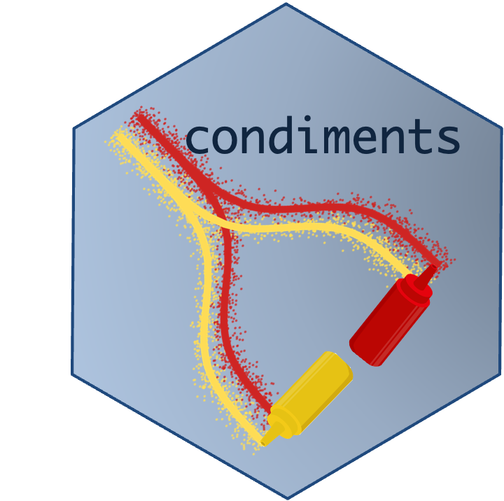

Installation
You can install the condiments from the devel branch of bioconductor using
if(!requireNamespace("BiocManager", quietly = TRUE)) {
install.packages("BiocManager")
}
BiocManager::install("tradeSeq")To install the development version in R, run
if(!requireNamespace("devtools", quietly = TRUE)) {
install.packages("devtools")
}
devtools::install_github("HectorRDB/condiments")The installation should only take a few seconds. The dependencies of the package are listed in the DESCRIPTION file of the package.
Issues and bug reports
Please use https://github.com/HectorRDB/condiments/issues to submit issues, bug reports, and comments.